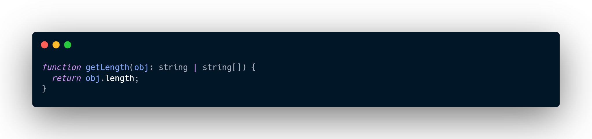

TypeScript for JavaScript Programmers
TypeScript stands in an unusual relationship to JavaScript. TypeScript offers all of JavaScript's features, and an additional layer on top of these: TypeScript's type system.
For example, JavaScript provides language primitives like string and number, but it doesn't check that you've consistently assigned these. TypeScript does.
This means that your existing working JavaScript code is also TypeScript code. The main benefit of TypeScript is that it can highlight unexpected behavior in your code, lowering the chance of bugs.
This tutorial provides a brief overview of TypeScript, focusing on its type system.
Types by Inference
TypeScript knows the JavaScript language and will generate types for you in many cases. For example in creating a variable and assigning it to a particular value, TypeScript will use the value as its type.

By understanding how JavaScript works, TypeScript can build a type-system that accepts JavaScript code but has types. This offers a type-system without needing to add extra characters to make types explicit in your code. That's how TypeScript knows that >helloWorld is a string in the above example.
You may have written JavaScript in Visual Studio Code, and had editor auto-completion. Visual Studio Code uses TypeScript under the hood to make it easier to work with JavaScript.
Defining Types
You can use a wide variety of design patterns in JavaScript. However, some design patterns make it difficult for types to be inferred automatically (for example, patterns that use dynamic programming). To cover these cases, TypeScript supports an extension of the JavaScript language, which offers places for you to tell TypeScript what the types should be.
For example, to create an object with an inferred type which includes name: string and id: number, you can write:
You can explicitly describe this object's shape using an interface declaration:
You can then declare that a JavaScript object conforms to the shape of your new interface by using syntax like : TypeName after a variable declaration:
If you provide an object that doesn't match the interface you have provided, TypeScript will warn you:
Since JavaScript supports classes and object-oriented programming, so does TypeScript. You can use an interface declaration with classes:
You can use interfaces to annotate parameters and return values to functions:
There is already a small set of primitive types available in JavaScript: boolean, bigint, null, number, string, symbol, and undefined, which you can use in an interface. TypeScript extends this list with a few more, such as any (allow anything), unknown (ensure someone using this type declares what the type is), never (it's not possible that this type could happen), and void (a function which returns undefined or has no return value).
You'll see that there are two syntaxes for building types: Interfaces and Types. You should prefer interface. Use type when you need specific features.
Composing Types
With TypeScript, you can create complex types by combining simple ones. There are two popular ways to do so: with unions, and with generics.
Unions
With a union, you can declare that a type could be one of many types. For example, you can describe a boolean type as being either true or false:
Note: If you hover over MyBool above, you’ll see that it is classed as boolean. That’s a property of the Structural Type System. More on this below.
A popular use-case for union types is to describe the set of string or number literals that a value is allowed to be:
Unions provide a way to handle different types too. For example, you may have a function that takes an array or a string:
To learn the type of a variable, use typeof:
For example, you can make a function return different values depending on whether it is passed a string or an array:
Generics
Generics provide variables to types. A common example is an array. An array without generics could contain anything. An array with generics can describe the values that the array contains.
You can declare your own types that use generics:
Structural Type System
One of TypeScript's core principles is that type checking focuses on the shape that values have. This is sometimes called “duck typing” or “structural typing”.
In a structural type system, if two objects have the same shape, they are considered to be of the same type.
The point variable is never declared to be a Point type. However, TypeScript compares the shape of point to the shape of Point in the type-check. They have the same shape, so the code passes.
The shape-matching only requires a subset of the object’s fields to match.
There is no difference between how classes and objects conform to shapes:

If the object or class has all the required properties, TypeScript will say they match, regardless of the implementation details.